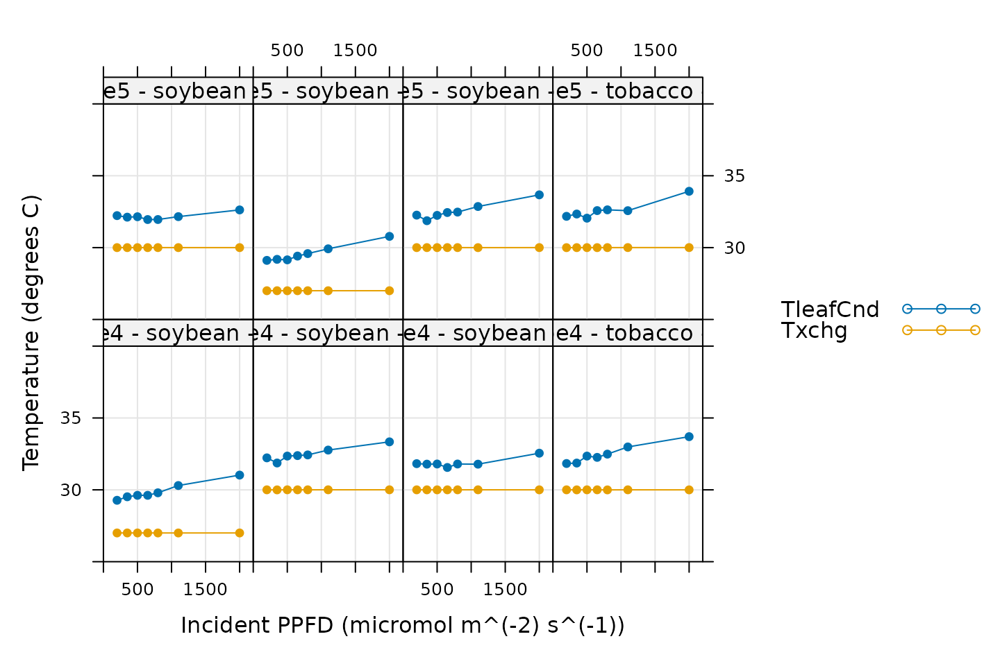
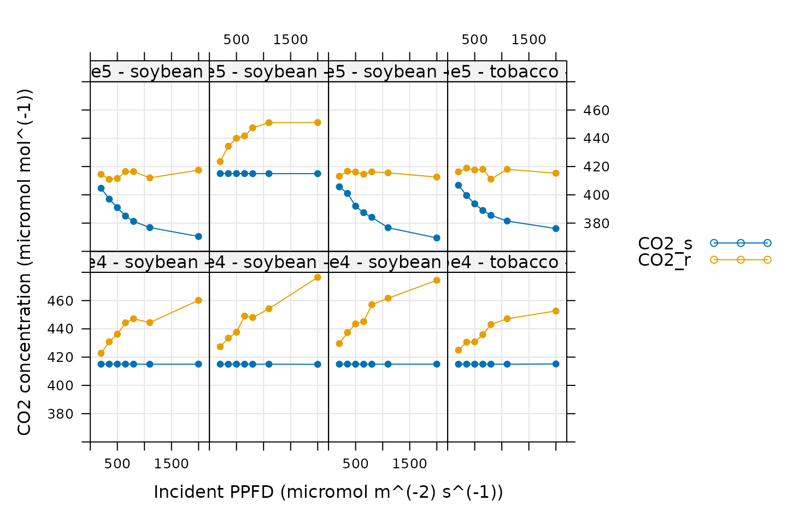
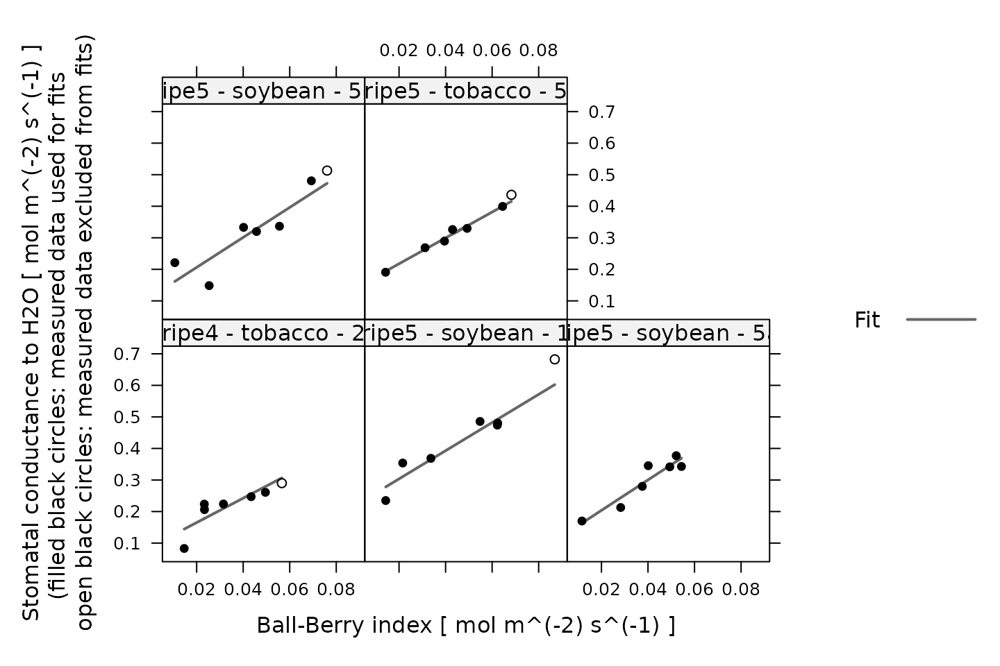

Analyzing Ball-Berry Data
Source:vignettes/analyzing_ball_berry_data.Rmd
analyzing_ball_berry_data.RmdOverview
In this vignette, we will give an example showing how to analyze Ball-Berry data using the PhotoGEA package. The commands in this vignette can be used to initialize your own script, as described in Customizing Your Script.
Background
The Model
The Ball-Berry model is a simple way to describe the response of a leaf’s stomata to its assimilation rate and local environmental conditions. Specifically, it predicts stomatal conductance to water vapor using the following equation:
\[ g_{sw} = b_0 + b_1 * A_n * h_s / C_s \]
where \(g_{sw}\) is the stomatal conductance, \(A_n\) is the net assimilation rate, \(h_s\) is the relative humidity at the leaf surface, and \(C_s\) is the CO2 concentration at the leaf surface. The term \(A_n * h_s / C_s\) is commonly referred to as the Ball-Berry index, and the model can be described as predicting a linear relationship between stomatal conductance and the Ball-Berry index. The intercept (\(b_0\)) and slope (\(b_1\)) of the linear relationship are referred to as the Ball-Berry parameters, and they describe the leaf’s stomatal response.
Although this model is certainly an oversimplification, it does encode some important stomatal responses. For example, when humidity is low, the stomata of a real plant tend to close, reducing stomatal conductance. Likewise, if the CO2 concentration around the leaf is depleted, the stomata of a real plant tend to open, increasing somatal conductance. For more information about this model and some possible alternatives, see the following papers:
The Data
Ball-Berry parameters are typically determined by measuring a Ball-Berry curve, where one or more of the environmental factors that influence the Ball-Berry index is systematically varied across a range of values. For each value, care is taken that \(A_n\) and \(g_{sw}\) have reached their steady-state values, and then \(A_n\), \(g_{sw}\), and other key pieces of information are recorded. Finally, a linear fit of the experimentally observed \(g_{sw}\) as a function of the Ball-Berry index is performed to extract values for the Ball-Berry intercept and slope.
Such photosynthetic gas exchange measurements are commonly performed using a Licor portable photosynthesis system such as the Li-6400 or Li-6800. These machines record values of \(A_n\), \(g_{sw}\), and many other important quantities. They produce two types of output files: plain-text and Microsoft Excel. It is often more convenient to work with the Excel files since the entries can be easily modified (for example, to remove an extraneous row or add a new column). On the other hand, it can be more difficult to access the file contents using other pieces of software such as R. However, the PhotoGEA package reduces this barrier by including tools for reading Licor Excel files in R, which will be demonstrated in the following section.
Loading Packages
As always, the first step is to load the packages we will be using. In addition to PhotoGEA, we will also use the lattice package for generating plots.
If the lattice package is not installed on your R setup, you can install it by typing install.packages('lattice').
Loading Licor Data
The PhotoGEA package includes two files representing Ball-Berry data measured using two Li-6800 instruments. The data is stored in Microsoft Excel files, and includes curves measured from two different crop species (tobacco and soybean) and several different plots of each. Each curve is a seven-point light response curve; in other words, the incident light intensity was varied to change \(A_n\) and hence the Ball-Berry index. Although these two files are based on real data, noise was added to it since it is unpublished, so these files should only be used as examples.
The files will be stored on your computer somewhere in your R package installation directory, and full paths to these files can be obtained with system.file:
# Define a vector of paths to the files we wish to load
file_paths <- c(
system.file('extdata', 'ball_berry_1.xlsx', package = 'PhotoGEA'),
system.file('extdata', 'ball_berry_2.xlsx', package = 'PhotoGEA')
)To actually read the data in the files and store them in R objects, we will use the read_licor_file function from PhotoGEA. Since there are multiple files to read, we will call this function once for each file using lapply:
# Load each file, storing the result in a list
licor_exdf_list <- lapply(file_paths, function(fpath) {
read_licor_file(fpath, c(3, 5, 7, 9, 11, 13), 14, 15, 16, 17, 'time')
})The result from this command is an R list of “extended data frames” (abbreviated as exdf objects). The exdf class is a special data structure defined by the PhotoGEA package. In many ways, an exdf object is equivalent to a data frame, with the major difference being that an exdf object includes the units of each column. For more information, type ?exdf in the R terminal to access the built-in help menu entry.
Generally, it is more convenient to work with a single exdf object rather than a list of them, so our next step will be to combine the objects in the list. This action can be accomplished using the rbind function, which combines table-like objects by their rows; in other words, it stacks two or more tables vertically. This action only makes sense if the tables have the same columns, so before we combine the exdf objects, we should make sure this is the case.
The PhotoGEA package includes a function called identify_common_columns that can be used to get the names of all columns that are present in all of the Licor files. Then, we can extract just those columns, and then combine the exdf objects into a single one.
# Get the names of all columns that are present in all of the Licor files
columns_to_keep <- do.call(identify_common_columns, licor_exdf_list)
# Extract just these columns
licor_exdf_list <- lapply(licor_exdf_list, function(x) {
x[ , columns_to_keep, TRUE]
})
# Use `rbind` to combine all the data
licor_data <- do.call(rbind, licor_exdf_list)Now we have a single R object called licor_data that includes all the data from several Licor Excel files.
Checking Licor Data
Before extracting Ball-Berry parameters, it is a good idea to do some basic checks of the data to ensure it is organized properly and that it was measured properly.
Basic Checks
First, we should make sure there is a column in the data whose value uniquely identifies each curve. In this particular data set, several “user constants” were defined while making the measurements that help to identify each curve: instrument, species, and plot. However, neither of these columns alone are sufficient to uniquely identify each curve. We can solve this issue by creating a new column that combines the values from each of these:
# Create a new identifier column formatted like `instrument - species - plot`
licor_data[ , 'curve_identifier'] <-
paste(licor_data[ , 'instrument'], '-', licor_data[ , 'species'], '-', licor_data[ , 'plot'])The next step is to make sure that this column correctly identifies each response curve. To do this, we can use the check_licor_data function from PhotoGEA. Here we will supply the name of a column that should uniquely identify each response curve (curve_identifier), the expected number of points in each curve (7), the name of a “driving” column that should follow the same sequence in each curve (Qin), and tolerance for the values of the driving column (1.0 mol / m^2 / s). If the data passes the checks, this function will have no output and will not produce any messages. (For more information, see the built-in help menu entry by typing ?check_licor_data.)
# Make sure the data meets basic requirements
check_licor_data(licor_data, 'curve_identifier', 7, 'Qin', 1.0)However, if check_licor_data detects an issue, it will print a helpful message to the R terminal. For example, if we had specified the wrong number of points, the wrong identifier column, or an unrealistic tolerance, we would get error messages:
check_licor_data(licor_data, 'curve_identifier', 8)
#> curve_identifier npts
#> 1 ripe4 - soybean - 1a 7
#> 2 ripe4 - soybean - 1b 7
#> 3 ripe4 - soybean - 5 7
#> 4 ripe4 - tobacco - 2 7
#> 5 ripe5 - soybean - 1 7
#> 6 ripe5 - soybean - 5a 7
#> 7 ripe5 - soybean - 5c 7
#> 8 ripe5 - tobacco - 5 7
#> Error in check_licor_data(licor_data, "curve_identifier", 8): One or more curves does not have the expected number of points.
check_licor_data(licor_data, 'species', 7)
#> species npts
#> 1 soybean 42
#> 2 tobacco 14
#> Error in check_licor_data(licor_data, "species", 7): One or more curves does not have the expected number of points.
check_licor_data(licor_data, 'curve_identifier', 7, 'Qin', 0.1)
#> ripe4 - soybean - 1a ripe4 - soybean - 1b ripe4 - soybean - 5
#> 2000.03 1999.85 1999.98
#> ripe4 - tobacco - 2 ripe5 - soybean - 1 ripe5 - soybean - 5a
#> 2000.02 2000.05 2000.14
#> ripe5 - soybean - 5c ripe5 - tobacco - 5
#> 2000.12 1999.81
#> Error in check_licor_data(licor_data, "curve_identifier", 7, "Qin", 0.1): Values of the `Qin` column are not identical (within the tolerance of 0.1) for point 1 within the curve sequence.Qualitative Checks
Since the data has passed the basic checks, we can now take a look at it to make sure it seems reasonable. Sometimes a Licor will override the temperature or humidity controls while making measurements; in this case, conditions inside the measurement chamber may not be stable, and these curves may not accurately reflect the plant’s true steady-state stomatal response. We can check for these types of issues by making plots. In this situation, the lattice library makes it simple to include each curve as its own separate subplot of a figure. In the following sections, we will generate several different plots to check each curve for quality.
Humidity Control
# Make a plot to check humidity control
xyplot(
RHcham + `Humidifier_%` + `Desiccant_%` ~ Qin | curve_identifier,
data = licor_data$main_data,
type = 'b',
pch = 16,
auto = TRUE,
grid = TRUE,
ylim = c(0, 100),
xlim = c(0, 2200),
xlab = paste0('Incident PPFD (', licor_data$units$Qin, ')')
)Here, Humidifier_% and Desiccant_% represent the flow from the humidifier and desiccant columns, where a value of 0 indicates that the valve to the column is fully closed and a value of 100 indicates that the valve to the column is fully opened. RHcham represents the relative humidity inside the chamber as a percentage (in other words, as a value between 0 and 100). Qin is the incident photosynthetically active flux density (PPFD). When these curves were measured, a chamber humidity setpoint was specified. So, when looking at this plot, we should check that the relative humidity is fairly constant during each curve. Typically, this should be accompanied by relatively smooth changes in the valve percentages as they accomodate changes in ambient humidity and leaf photosynthesis. In this plot, all the data looks good.
Temperature Control
# Make a plot to check temperature control
xyplot(
TleafCnd + Txchg ~ Qin | curve_identifier,
data = licor_data$main_data,
type = 'b',
pch = 16,
auto = TRUE,
grid = TRUE,
ylim = c(25, 40),
xlim = c(0, 2200),
xlab = paste0('Incident PPFD (', licor_data$units$Qin, ')'),
ylab = paste0('Temperature (', licor_data$units$TleafCnd, ')')
)
Here, TleafCnd is the leaf temperature measured using a thermocouple, and Txchg is the temperature of the heat exhanger that is used to control the air temperature in the measurement instrument. When these curves were measured, an exchanger setpoint was specified. So, when looking at this plot, we should check that Txchg is constant during each curve and that the leaf temperature does not vary in an erratic way. In this plot, all the data looks good.
CO2 Control
# Make a plot to check CO2 control
xyplot(
CO2_s + CO2_r ~ Qin | curve_identifier,
data = licor_data$main_data,
type = 'b',
pch = 16,
auto = TRUE,
grid = TRUE,
ylim = c(360, 480),
xlim = c(0, 2200),
xlab = paste0('Incident PPFD (', licor_data$units$Qin, ')'),
ylab = paste0('CO2 concentration (', licor_data$units$CO2_r, ')')
)
Here, CO2_s is the CO2 concentration in the sample cell and CO2_r is the CO2 concentration in the reference cell. When these curves were measured, a sample cell CO2 concentration setpoint was supplied. So, when looking at this plot, we should check that CO2_s is constant during each curve. Here, it looks like the ripe5 instrument was not controlling CO2 as expected during several of its curves; CO2_s is not constant for ripe5 - soybean - 1, ripe5 - soybean - 5c, and ripe5 - soybean - 5. However, CO2_r is relatively constant during these curves, and the changes in CO2_s are smooth, so it is reasonable to expect that the measurements represent true steady-state values. Considering this, all of these curves are acceptable based on the CO2 plots.
Light-Response Curves
# Make a plot to check light-response curves
xyplot(
A ~ Qin | curve_identifier,
data = licor_data$main_data,
type = 'b',
pch = 16,
auto = TRUE,
grid = TRUE,
ylim = c(-5, 50),
xlim = c(0, 2200),
xlab = paste0('Incident PPFD (', licor_data$units$Qin, ')'),
ylab = paste0('Net assimilation (', licor_data$units$A, ')')
)
Here we are simply looking for a reasonable light-response curve shape, where assimilation is low when light is low, assimilation has a roughly linear response to initial increases in light intensity, and then finally reaches a plateau. Any strong deviations from the expected shape may indicate that the plant was stressed or otherwise behaving abnormally, and we might not want to use such a curve for Ball-Berry analysis. In this plot, three of the curves do not look like normal C3 light response curves: ripe4 - soybean - 1a, ripe4 - soybean - 1b, and ripe4 - soybean - 5. These strange curves are likely a byproduct of the noise that was intentionally added to the true measured data (see The Data). Nevertheless, it may be a good idea to remove them before proceeding with the Ball-Berry fitting.
Fitting Licor Data
Now that we have checked the data quality, we are ready to perform the fitting. As they are produced by the instruments, Licor data files do not include values of the Ball-Berry index; in fact, they do not even include values of \(h_s\) and \(C_s\) required to calculate the Ball-Berry index. However, the PhotoGEA package includes two functions to help with these calculations: calculate_gas_properties and calculate_ball_berry_index. Each of these requires an exdf object containing Licor data, as well as the names of several important columns in the data. The units for each column will be checked in an attempt to avoid unit-related errors. More information about these functions can be obtained from the built-in help system by typing ?calculate_gas_properties or ?calculate_ball_berry_index. Here we will use them sequentially to calculate values of the Ball-Berry index:
# Calculate additional gas properties, including `RHleaf` and `Csurface`
licor_data <- calculate_gas_properties(
licor_data,
'A', 'Ca', 'DeltaPcham', 'E', 'gbw', 'gsw', 'H2O_s', 'Pa', 'TleafCnd'
)
# Calculate the Ball-Berry index
licor_data <- calculate_ball_berry_index(licor_data, 'A', 'RHleaf', 'Csurface')Together, these functions add several new columns to licor_data, including one called bb_index, which includes values of the Ball-Berry index. With this information, we are now ready to perform the fitting procedure. For this operation, we can use the fit_ball_berry function from the PhotoGEA package, which fits a single Ball-Berry curve to extract the Ball-Berry parameters. To apply this function to each curve in a larger data set and then consolidate the results, we can use it in conjunction with by and consolidate, which are also part of PhotoGEA. (For more information about these functions, see the built-in help menu entries by typing ?fit_ball_berry, ?by.exdf, or ?consolidate.) Together, these functions will split apart the main data using the curve identifier column we defined before (Basic Checks), make a linear fit of \(g_{sw}\) against the Ball-Berry index, and return the resulting parameters and fits:
# Fit a linear model to the Ball-Berry data
ball_berry_results <- consolidate(by(
licor_data, # The `exdf` object containing the curves
licor_data[, 'curve_identifier'], # A factor used to split `licor_data` into chunks
fit_ball_berry, # The function to apply to each chunk of `licor_data`
'gsw', # Additional argument required by `fit_ball_berry`
'bb_index' # Additional argument required by `fit_ball_berry`
))Viewing the Fitted Curves
Having made the fits, it is now a good idea to visually check them, making sure they look reasonable. As before, we can use xyplot from the lattice library to quickly make plots of all the fits, which are stored in ball_berry_results$fits, an exdf object:
# Plot the Ball-Berry fits
xyplot(
gsw + gsw_fit ~ bb_index | curve_identifier,
data = ball_berry_results$fits$main_data,
type = 'b',
pch = 16,
auto = TRUE,
grid = TRUE,
xlab = paste0('Ball-Berry index (', ball_berry_results$fits$units$bb_index, ')'),
ylab = paste0('Stomatal conductance to H2O (', ball_berry_results$fits$units$gsw, ')'),
ylim = c(0, 0.8),
xlim = c(0, 0.1)
)
All these fits look good!
Viewing the Fitted Parameter Values
We can also take a look at the fitted Ball-Berry parameter values, which are stored in ball_berry_results$parameters, another exdf object. This object includes many columns but we only care about a few of them. We can view them as follows:
# View the Ball-Berry parameters
columns_for_viewing <-
c('instrument', 'species', 'plot', 'bb_intercept', 'bb_slope', 'r_squared')
ball_berry_parameters <-
ball_berry_results$parameters[ , columns_for_viewing, TRUE]
print(ball_berry_parameters)
#> instrument [UserDefCon] (NA) species [UserDefCon] (NA)
#> 22 ripe4 tobacco
#> 36 ripe5 soybean
#> 29 ripe5 soybean
#> 43 ripe5 soybean
#> 50 ripe5 tobacco
#> plot [UserDefCon] (NA) bb_intercept [fit_ball_berry] (mol m^(-2) s^(-1))
#> 22 2 0.09410874
#> 36 1 0.18849637
#> 29 5a 0.10722148
#> 43 5c 0.09976589
#> 50 5 0.12819393
#> bb_slope [fit_ball_berry] (dimensionless) r_squared [fit_ball_berry] ()
#> 22 3.613489 0.7186892
#> 36 5.240165 0.9321769
#> 29 4.823671 0.8866346
#> 43 5.123674 0.8454999
#> 50 4.332600 0.9846671Extracting Average Values
Finally, we can extract average values of the Ball-Berry parameters for each species using the basic_stats function from PhotoGEA:
# Compute the average and standard error for the Ball-Berry slope and intercept
# for each species
ball_berry_averages <- basic_stats(
ball_berry_results$parameters[ , c('species', 'K', 'bb_intercept', 'bb_slope'), TRUE],
'species'
)
# View the averages and errors
print(ball_berry_averages)
#> species [UserDefCon] (NA) K [Const] (NA)
#> 1 soybean 0.5
#> 2 tobacco 0.5
#> bb_intercept_avg [fit_ball_berry] (mol m^(-2) s^(-1))
#> 1 0.1318279
#> 2 0.1111513
#> bb_intercept_stderr [fit_ball_berry] (mol m^(-2) s^(-1))
#> 1 0.02841585
#> 2 0.01704259
#> bb_slope_avg [fit_ball_berry] (dimensionless)
#> 1 5.062503
#> 2 3.973044
#> bb_slope_stderr [fit_ball_berry] (dimensionless)
#> 1 0.1240609
#> 2 0.3595554Customizing Your Script
Note that most of the commands in this vignette have been written in a general way so they can be used as the basis for your own Ball-Berry analysis script (see Commands From This Document). In order to use them in your own script, some or all of the following changes may be required. There may also be others not specifically mentioned here.
Input Files
The file paths specified in file_paths will need to be modified so they point to your Licor files. In your own script, you may want to consider using the choose_input_licor_files function from PhotoGEA; this function will create a pop-up browser window where you can interactively select a set of Excel files. Sometimes this is more convenient than writing out full file paths. For example, you could replace the previous definition of file_paths with this one:
# Interactively define a vector of paths to the files we wish to load
file_paths <- choose_input_licor_files()Unfortunately, choose_input_licor_files is only available in interactive R sessions running on Microsoft Windows.
Curve Identifier
Depending on which user constants are defined in your Licor Excel files, you may need to modify the definition of the curve_identifier column.
Excluded Curves
Depending on the qualitative data checks, you may need to change the definition of the curves_to_remove vector.
Averages and Standard Errors
Depending on how your data is organized, you may want to change the column used to divide the data when calculating averages and standard errors.
Plots
You may need to change the axis limits in some or all of the plots. Alternatively, you can remove them, allowing xyplot to automatically choose them for you.
Saving Results
You may want to use write.csv to save some or all of the fitting results as csv files. For example, the following commands will allow you to interactively choose output filenames for the resulting csv files:
write.csv(ball_berry_results$fits, file.choose(), row.names = FALSE)
write.csv(ball_berry_results$parameters, file.choose(), row.names = FALSE)
write.csv(ball_berry_averages, file.choose(), row.names = FALSE)Commands From This Document
The following code chunk includes all the central commands used throughout this document. They are compiled here to make them easy to copy/paste into a text file to initialize your own script.
# Load required packages
library(PhotoGEA)
library(lattice)
# Define a vector of paths to the files we wish to load
file_paths <- c(
system.file('extdata', 'ball_berry_1.xlsx', package = 'PhotoGEA'),
system.file('extdata', 'ball_berry_2.xlsx', package = 'PhotoGEA')
)
# Load each file, storing the result in a list
licor_exdf_list <- lapply(file_paths, function(fpath) {
read_licor_file(fpath, c(3, 5, 7, 9, 11, 13), 14, 15, 16, 17, 'time')
})
# Get the names of all columns that are present in all of the Licor files
columns_to_keep <- do.call(identify_common_columns, licor_exdf_list)
# Extract just these columns
licor_exdf_list <- lapply(licor_exdf_list, function(x) {
x[ , columns_to_keep, TRUE]
})
# Use `rbind` to combine all the data
licor_data <- do.call(rbind, licor_exdf_list)
# Create a new identifier column formatted like `instrument - species - plot`
licor_data[ , 'curve_identifier'] <-
paste(licor_data[ , 'instrument'], '-', licor_data[ , 'species'], '-', licor_data[ , 'plot'])
# Make sure the data meets basic requirements
check_licor_data(licor_data, 'curve_identifier', 7, 'Qin', 1.0)
# Make a plot to check humidity control
xyplot(
RHcham + `Humidifier_%` + `Desiccant_%` ~ Qin | curve_identifier,
data = licor_data$main_data,
type = 'b',
pch = 16,
auto = TRUE,
grid = TRUE,
ylim = c(0, 100),
xlim = c(0, 2200),
xlab = paste0('Incident PPFD (', licor_data$units$Qin, ')')
)
# Make a plot to check temperature control
xyplot(
TleafCnd + Txchg ~ Qin | curve_identifier,
data = licor_data$main_data,
type = 'b',
pch = 16,
auto = TRUE,
grid = TRUE,
ylim = c(25, 40),
xlim = c(0, 2200),
xlab = paste0('Incident PPFD (', licor_data$units$Qin, ')'),
ylab = paste0('Temperature (', licor_data$units$TleafCnd, ')')
)
# Make a plot to check CO2 control
xyplot(
CO2_s + CO2_r ~ Qin | curve_identifier,
data = licor_data$main_data,
type = 'b',
pch = 16,
auto = TRUE,
grid = TRUE,
ylim = c(360, 480),
xlim = c(0, 2200),
xlab = paste0('Incident PPFD (', licor_data$units$Qin, ')'),
ylab = paste0('CO2 concentration (', licor_data$units$CO2_r, ')')
)
# Make a plot to check light-response curves
xyplot(
A ~ Qin | curve_identifier,
data = licor_data$main_data,
type = 'b',
pch = 16,
auto = TRUE,
grid = TRUE,
ylim = c(-5, 50),
xlim = c(0, 2200),
xlab = paste0('Incident PPFD (', licor_data$units$Qin, ')'),
ylab = paste0('Net assimilation (', licor_data$units$A, ')')
)
# Define a list of curves to remove from the data set
curves_to_remove <- c(
'ripe4 - soybean - 1a',
'ripe4 - soybean - 1b',
'ripe4 - soybean - 5'
)
# Remove them
licor_data <-
licor_data[!licor_data[, 'curve_identifier'] %in% curves_to_remove, , TRUE]
# Calculate additional gas properties, including `RHleaf` and `Csurface`
licor_data <- calculate_gas_properties(
licor_data,
'A', 'Ca', 'DeltaPcham', 'E', 'gbw', 'gsw', 'H2O_s', 'Pa', 'TleafCnd'
)
# Calculate the Ball-Berry index
licor_data <- calculate_ball_berry_index(licor_data, 'A', 'RHleaf', 'Csurface')
# Fit a linear model to the Ball-Berry data
ball_berry_results <- consolidate(by(
licor_data, # The `exdf` object containing the curves
licor_data[, 'curve_identifier'], # A factor used to split `licor_data` into chunks
fit_ball_berry, # The function to apply to each chunk of `licor_data`
'gsw', # Additional argument required by `fit_ball_berry`
'bb_index' # Additional argument required by `fit_ball_berry`
))
# Plot the Ball-Berry fits
xyplot(
gsw + gsw_fit ~ bb_index | curve_identifier,
data = ball_berry_results$fits$main_data,
type = 'b',
pch = 16,
auto = TRUE,
grid = TRUE,
xlab = paste0('Ball-Berry index (', ball_berry_results$fits$units$bb_index, ')'),
ylab = paste0('Stomatal conductance to H2O (', ball_berry_results$fits$units$gsw, ')'),
ylim = c(0, 0.8),
xlim = c(0, 0.1)
)
# View the Ball-Berry parameters
columns_for_viewing <-
c('instrument', 'species', 'plot', 'bb_intercept', 'bb_slope', 'r_squared')
ball_berry_parameters <-
ball_berry_results$parameters[ , columns_for_viewing, TRUE]
print(ball_berry_parameters)
# Compute the average and standard error for the Ball-Berry slope and intercept
# for each species
ball_berry_averages <- basic_stats(
ball_berry_results$parameters[ , c('species', 'K', 'bb_intercept', 'bb_slope'), TRUE],
'species'
)
# View the averages and errors
print(ball_berry_averages)